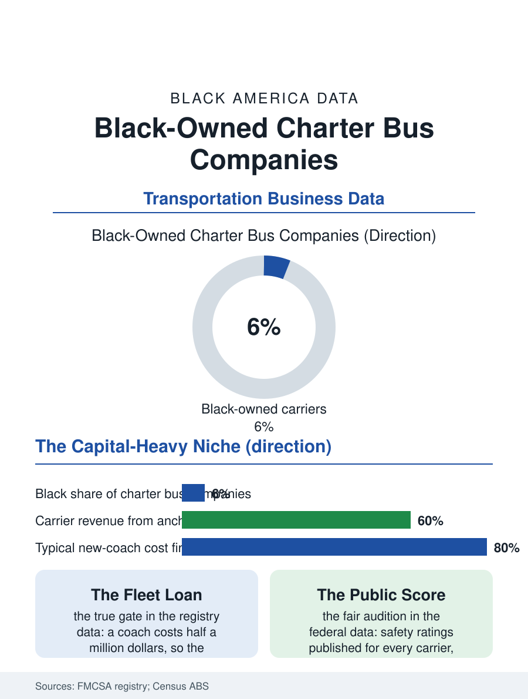

Black Business
The Homecoming Fleet: Black-Owned Charter Bus Companies
Charter buses carry Black America's collective calendar, and the Black carriers who own them cleared a half-million-dollar gate one coach at a time. The charter file.

The charter bus is the vehicle of Black America's collective life: the church trip, the family reunion caravan, the HBCU homecoming fleet, the school field trip, the casino run, the movement's own logistics, since chartered buses carried the freedom riders' successors and still carry the voters of the Souls to the Polls Sundays. The companies that own the coaches form a capital-heavy niche industry, and Black-owned charter bus companies operate within it at a modest share, several of them substantial regional carriers. This article reads the charter file.
Coaches, Contracts, and Capital
A modern motorcoach costs on the order of a half-million dollars, and a viable charter operation needs several, which places the industry on the far side of the capital line that sorts this atlas's business files: the entry purchase is a fleet loan, the collateral is the coaches, and the lender's judgment of the operator is the industry's true gate. The Federal Motor Carrier Safety Administration's registry data describe a sector of small carriers, most under a dozen coaches, beneath a few national consolidators, with demand stitched from contracts, school districts, universities, churches, corporations, and the military's troop movements, the last a significant and steady customer in the garrison geographies of this atlas. Black-owned carriers in the registry cluster in the Southeast and Mid-Atlantic, the regions of their anchor demand, and their histories in the trade literature follow the sector's classic arc: a founder-driver, often a school bus or transit veteran, a first used coach, church and school contracts won on reliability, and a fleet assembled across decades of debt retired coach by coach. The insurance file is the industry's heaviest operating weight, commercial liability premiums that dwarf most service businesses' costs and rise with every verdict in the news, a fixed burden that scale absorbs and the small carrier feels in full.
The Anchor Contracts
The demand file sorts by reliability of payment. School contracts, athletics and activities transportation for districts and universities, pay on public schedules and renew on performance, the industry's ballast; the HBCU athletics departments and band programs, whose travel is this atlas's band file on wheels, are anchor clients for Black carriers in the Southeast by both logistics and loyalty. Church and reunion work is the community's own demand, seasonal, relationship-priced, and booked through the same trust channels as every business in these pages. Corporate and military contracts pay the best rates and demand the newest fleets and the deepest compliance, the industry's summit tier, where the carriers' safety ratings, published by the federal regulator in a public score any customer can check, function as the file's fairest audition, a number earned mile by mile that no network issues. The driver shortage overlays everything: the commercial license with passenger endorsement, the clean record, and the temperament for a coach full of somebody's grandmother are a scarce combination the industry recruits for continuously, and the carriers' driver benches, heavy with retired transit and school drivers, reflect the labor market's actual supply.
The Wheels of the Collective Life
The charter file's closing reflection is about what the industry carries. The American story's collective movements have run on chartered coaches to a degree the car-centered data rarely register: the March on Washington's thousands of buses, the funeral caravans, the reunion fleets that move a scattered family's generations back to the home county for a weekend, the church anniversary trip that is an elderly congregation's annual summit. Black carriers own a piece of that logistics outright, and their buses, with the company name in script on the side, are among the most visible Black-owned industrial assets in the landscape, fifty feet of rolling evidence. The industry's forward file is consolidation and electrification in uncertain order: the consolidators are buying regional carriers for their contracts and drivers, offering founders the trades file's familiar exit question, while the electric coach's economics are arriving first in the transit and school segments adjacent to charter. The charter file closes at dawn in the yard, the coaches idling in a row, drivers walking the inspection with clipboards, a homecoming fleet loading by noon. The data can count the coaches and the contracts. The cargo, a people's whole collective calendar, it can only point at, which this file does, with respect, in the direction of the highway.
More in Black Business
Black-Owned Businesses: Counts, Receipts, and the Representation Gap
About 161,000 Black-owned employer firms and three million solo ventures: how the Census Bureau counts Black business ownership, where firms concentrate, and the gap between population share and business share.
Black Median Net Worth: The Wealth Gap in Federal Reserve Data
The Federal Reserve puts Black median family net worth at $44,900, against $285,000 for White families — about 16 cents on the dollar. The widest gap in economic data.
Black Buying Power: The $1.8 Trillion Consumer Economy
Black buying power is estimated at about $1.8 trillion — larger than the economy of most nations. What the figure measures, who produces it, and what it buys.
Source: Federal Motor Carrier Safety Administration carrier registry; U.S. Census Bureau, Annual Business Survey (NAICS 48551); motorcoach industry data.